Hello, my name is
Maia Herrington.
I like to
I'm a computer engineer working in the space industry. In January, I'm joining Stoke Space as an Embedded Software Engineer. Keep scrolling to learn more about the other work I've done!
Skills

PCBA Design
Experienced with PCBA design, layout, and fabrication.
Lab Tools
I've used multimeter, oscilloscope, signal analyzer, and more.
Programming
Familiar with C++, C, Python, Matlab, Verilog, and Git.
Debugging
Capable of doing both hardware and software debugging.
Teamwork
I love working with and learning from those around me.
Portfolio
Sodium CubeSat Radio
Michigan eXploration Laboratory
Maize Toss: RFID Cornhole
EECS 473 Final Project
Automatic Cruise Controller
EECS 461 Final Project
MARIO CubeSat
Michigan eXploration Laboratory
NASA Celestial Mapping System
NASA Ames Research Center
Assembler/Linker/Pipeline
EECS 370 Course Projects

© Maia Herrington 2023
Attributions